3D Technologies and Analysis - The serve wind up¶
3D Technologies and Analysis:
The Serve Wind Up
Dr. Brian Gordon
Last month I introduced a technology and a computer interface that shows how we incorporate 3D measurement and analysis into player development (Click here). This on court coaching application goes a step beyond the previous uses of quantitative technology, which have been primarily in academic research. I believe it represents the future of tennis coaching.
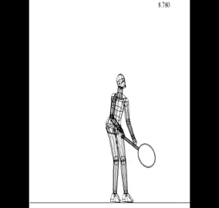
What does 3D analysis tell us about the first phase of the serve?
The implications and potential benefits of quantitative data are vast. If you had a chance to examine the dimensions of the interface in the first article, I hope you were intrigued by the scope of the information now available to evaluate stroke mechanics. (link.)
[The question however is what it all means. Vast amounts of new information can be overwhelming. It can leave the student and coach wondering where to start. I know because I have spent the last several years wrestling with the issue as I integrated this powerful new tool into my coaching practice.]
Starting this month, I hope to remove some of the potential confusion that surrounds an applied 3D approach. We'll do this by beginning to break apart the components of the data presentation, and see how they apply to an actual player. [We'll start with the serve. This article represents the first in a four part series on what is arguably the most important stroke in tennis.]
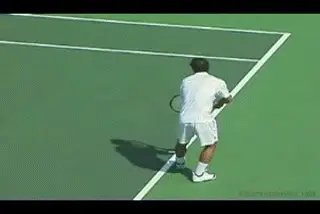
What are the optimum angles of the key body positions at the end of Phase 1?
Four Phases of the Serve
The serve in my view is made up of four phases: the wind up, the back swing, the upward swing, and the follow through. You can see these phases in the computer interface if you select "Racquet Speed Data" under data options. As the animation is played, the 4 phases of the swing are displayed.
In this first article I will focus exclusively on the first phase: the wind up. We'll discuss the nature of the wind up, and then present some target measurements we use to evaluate players. These targets are expressed as the angles of key body positions at the conclusion of the wind up. Based on our research, they are optimum values that can be used to measure the effectiveness of each phase. What I want to demonstrate is how the parts of the motion contribute to the establishment of these key measurements.\ \ Before we start, a brief warning. It is important to realize that one of the most important findings in our quantitative work is that there is no "perfect" way to execute any tennis stroke. It's just more complex than that.
[4 Phases:] 1. Wind Up
-
Back Swing
-
Upward Swing
-
Follow Through
This conclusion may be disappointing for those seeking the "silver bullet" solution to the serve, or any other stroke problem. But that's reality. The good news is that our results can point to a variety of paths for players to develop effective strokes based on their preferences and capabilities, as well as their stroke patterns at the beginning of our program.
The coaching strategy we use is to tailor stroke components to the physical capabilities of individual students. This, of course, requires knowledge of those capabilities. And 3D technology and research does not provide information about player capabilities. This is where the judgment and experience of the coach still plays the critical role.
But the technology does provide unparalleled information about the other critical factors: objective information about the stroke components that are currently being used, combined with an understanding of the various options and their implications.
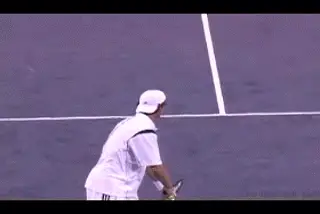
The wind up: from the separation of the hands to the beginning of the racquet drop.
Assessing how to apply this information, given the capabilities of a given player, is where the process transits from science to art in the hands of the coach. It's important to understand that the science itself doesn't blindly dictate what should happen. It just provides a new perspective to help in that process. The application of this information is still based on the creative and intuitive decisions made by coaches and players themselves.
A Beginning
And so we begin the discussion of the serve and of the main issues confronting coaches and players as revealed by the quantitative data. To the extent possible, this will be done in the context of the data accessible through the provided interface, using a young junior tournament player as our example.
Only by getting your hands dirty with the provided data will you be able to follow the intricacies of the discussion, and form your own theories which may well be different from mine. I'm hoping that you'll share whatever thoughts you have with me about this in the Forum.
Phase 1: The Wind Up
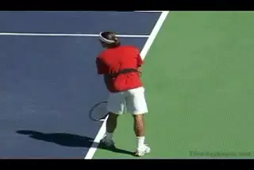
The end of the wind up usually corresponds with the beginning of the leg drive.
In our definition, the wind up starts as the tossing hand and/or ball separate from the racquet. It concludes when the racquet starts to drop into the back swing loop.
Determining the end of the wind up can be somewhat subjective but is normally visually obvious when seen from multiple viewpoints. Among servers with good mechanics, we have found that the end of the wind up coincides exactly with initiation of the leg drive.
So what is the big deal about the wind up? Great servers use a wide range of wind ups and still deliver pro level effectiveness. Why devote a whole article to a serve phase that seemingly has little to do with the end result of the motion?
[The answer is that the wind up sets the table for critical motions later in the swing. As a result, the motions during the wind up, and particularly the positions and angles attained at the end of the wind up, can make or break the entire service motion, affecting all the components.]
These components include: the arm and racquet path, the foot and leg work, and the position of the body. So let's look at each of those in some detail, and how they are related to the first phase of the motion.
A pendulum wind up with the racket tracing the circumference of the circle.
Arm and Racquet Path
To understand how we view the arm and racket path, take a close look at the stick figure animation in the interface. Turn the racquet path on using the "Path" button. This highlights the racquet motion and defines the racquet path progression.
Using the side view of our junior player (the left stick figure), we can see that he uses a traditional pendulum windup. This means the racket essentially traces the circumference of a circle as it moves down and then backwards and upwards in the wind up.
So is that good? Our experience has been that a pendulum motion is beneficial in giving the player the time needed for the segmental positioning of the body and for weight transfer--critical factors that we measure at the end of the wind up phase.
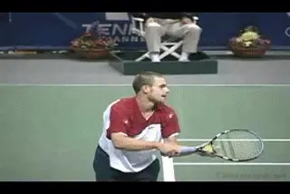
Roddick: the extreme example of an abbreviated windup.
Based on our database of Division 1 college players, the wind up typically accounts for about 60 % of the total swing time for high level servers. How does our player stack up here? He's pretty much dead on track. By clicking on "Stroke Phase Statistics" we can see that his wind up accounts for 58 % of the total swing time. A traditional pendulum wind up creates a racquet path length that is about 150 - 200 % of the standing height of the server.
These percentage values are obviously somewhat variable. They are not absolutes. But if a large path value is combined with a small time value it can indicate an abnormally fast progression with a pendulum windup, which may cause problems later on.
But we know that the pendulum windup is only one possible variation. In pro tennis, few players have full pendulum motions. Most use some version of an abbreviated wind up style. The most extreme example here is Andy Roddick.
We said the length of a classic pendulum wind up is somewhere in the range of 150 % to 200 % of the height of the server. When this measurement falls to 100 % or less, we can definitely say that the player is using an abbreviated style. The abbreviated style, has gained popularity based on the success of Roddick and is highly advocated in some coaching circles.
But what do the differences in wind up style really mean? Is there an advantage to one style or the other? Biomechanical research has indicated that there is actually not a significant difference between the two styles in two critical dimensions. Research done on players in Olympic competition found that that contact racquet speed and the loads on the hitting arm joints are not really affected by the wind up style.
[So does wind up style matter? Yes. The reason is that the different styles tend to produce significantly different body positions at the conclusion of the wind up, and in some of the key values we measure. With the abbreviated wind up, the elbow tends to be lower, the forearm tends to point towards the hitting side of the body, and the racquet tends to be positioned to the hitting side of the body.]
These are not minor differences. They can profoundly affect the transition to the second phase of the serve or the back swing. Although it would be getting ahead of the story to go into too much detail now, the differences in the wind up can alter the organization of the joint rotations that generate racquet speed in the upward swing.
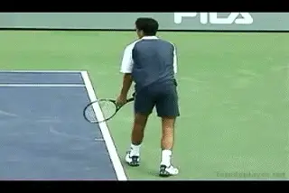
Different wind ups can complicate the integration of leg drive and body rotation.
Further, the differences in wind up styles can complicate the integration of the leg drive with upper body motion. Many players seeking to imitate the pros may actually create more problems for themselves than they solve if they are not able to master the more difficult aspects of the abbreviated wind ups. We'll see the implications of this to both joint rotation and leg drive in upcoming installments.
The Backswing Transition: Continuous versus Hesitation
If we look at "Racquet Speed Data" option for our junior player, we can see one additional wind up attribute that requires close consideration. This factor is actually independent of the various potential shapes of the backswing. This is racquet head speed as the racquet transits out of the wind up into the backswing.
Does the racket hesitate and lose speed, or is the transition continuous with the racket head speed continuing to build?
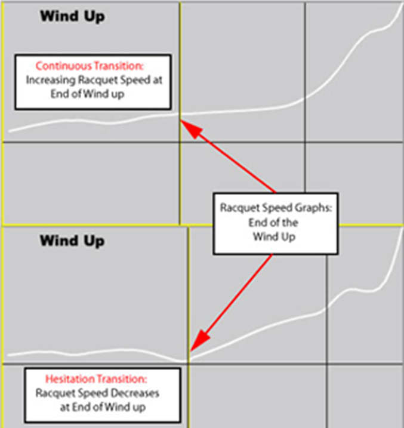
Video demonstration — the original video for this article was hosted on TennisPlayer.net. [Two transitions: one with increasing, the other decreasing racket head speed.]
Put another way: is there a slow down, or even pause or a hesitation, or is this transition continuous? We see both variations in the serves of high level as well as developing players. Some have a continuous transition, others have what I call a hesitation transition.
When servers demonstrate a clear decrease in racquet speed towards the end of the wind up, is this a significant problem? The answer can be yes or no. There is an apparent benefit to the continuous transition because it means some additional racquet speed as the server enters the back swing.
But we have found that the continuous transition actually increases the difficulty of coordinating the leg drive with the racquet progression especially in younger developing players. Again, more on these pluses and minuses as our series unfolds.
Leg and Foot Motion
Leg and foot motion is another subject that has received much attention in tennis literature. Previous quantitative studies looked at the forces received from the ground (ground reaction force) during the leg drive of serves hit with "foot up" and "foot back" techniques.
One study found that when the legs were closer together this ground reaction force possessed a larger vertical component. When the legs were further apart, the horizontal component was larger. Intuitively this makes sense, as if asked to jump for maximum height, most athletes will naturally position their feet in close proximity.
All things being equal, the foot position affects the direction of the groundforce.
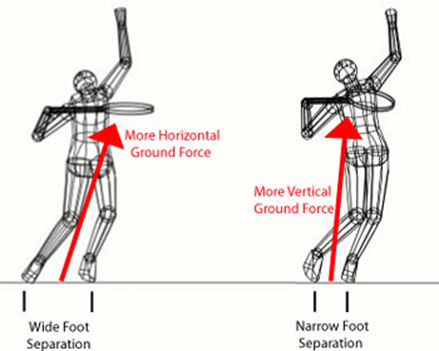
Video demonstration — the original video for this article was hosted on TennisPlayer.net.
In reality the amount of horizontal and vertical ground force is more complex than that. Certainly there is no simple correlation when we look at pro players. Some of the players that get highest off the ground use wide platform stances, while some of the players who barely leave the court use some version of the pinpoint.
However, there is an important underlying point here that explains the apparent contradiction shown by the pros. Research shows that there is going a relatively larger vertical component in the ground force when the feet are closer together.
The height off the court a player attains, however, is dependent on the overall size of the vertical component. This is influenced by the strength of the leg push. So more leg push, even with a more horizontally oriented ground force, could still end up generating greater height off the ground. The point is that the effects of the leg drive can be manipulated by adjustments in the width of the stance, and the type of stance, as we'll see below.
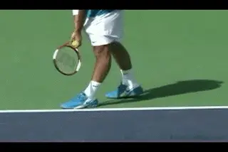
Federer uses a wide Platform and Roddick uses a Narrow.
Stance Terminology
The "foot up" and "foot back" terminology corresponds roughly to the common coaching terminology of "pinpoint" and "platform" stances, and this is the terminology I'll use. To be clear I'll refer to any serve where back foot movement occurs as "pinpoint" and any serve where no back foot movement occurs as "platform". This distinction between pinpoint and platform holds regardless of the relative distance between the feet.
[But the platform stance has to be subdivided into narrow and wide designations, depending on the distance between the feet.] By this designation, both Roger Federer (wide) and Andy Roddick (narrow) are platform servers.
Similarly with the pinpoint stance, there are two different types. The foot slides in both cases, but how far and where? One version is what we can call the standard pinpoint where the back foot is placed directly behind the front. The second is the lateral pinpoint where the back foot is placed to the hitting side (perhaps even slightly forward of) front foot. Again this tends to influence the body's segmental positioning at the end of the wind up.
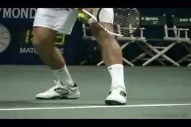
Video demonstration — the original video for this article was hosted on TennisPlayer.net.
Max Mirni uses a Standard Pinpoint. Marat Safin uses a Lateral Pinpoint.
Looking at the stick figure, it is clear that our player has a platform stance. This stance has already been modified as a result of his work in our program. The feeling of our coaching staff was that our player needed more beneficial leg drive, and that his more extreme platform stance may have been limiting that, so we experimented with moving the back foot closer up in his starting stance.
You can see the change by comparing his initial numbers to the current values. In the interface select "Compare Trials" and the date "081906." The difference in the stick figures shows the adjustment made in his stance.
Interestingly, initially our player lowered the peak vertical force from his leg drive. So while we succeeded in making the ground force more vertical, this subject did not push as hard with his legs as he did before. This phenomenon was later reversed as he became more accustomed to the narrower stance. What was apparent immediately in this stance adjustment was the change in the pattern or direction of vertical force, which was higher overall during his leg push in the next phase of the motion, the back swing.
You can see this by selecting "Angular Momentum Graphs" and in the "Data Display Options" selecting "Vertical Ground Reaction Force." Clearly, the blue line (081906) was higher in the middle of the leg push indicating a burst of stronger drive. However, the green line (111106) was higher at the beginning and end of the leg push indicating improvement in the overall quality of the drive in creating beneficial vertical ground force.
Center of Mass
The forward position of body mass at the completion of the windup is a key characteristic of the performance servers that provide our model data base.
When we looked at the data on our player, we felt that the stance adjustment would also help him achieve this. In fact, having the feet closer together accomplishes this task by definition, but it also allows the body to lean forward more by the end of the wind up. Again the result was successful as you can see if you go to "Enter Table Mode", "Center of Mass Position Data." Note the horizontal location difference in line one of the table. This line reports the horizontal distance between the center of mass and the front foot. For our player it moved forward by four inches which is a very significant change.
I should note that both the increased vertical ground reaction force goal and the more forward center of mass could have actually been accomplished (and perhaps even enhanced in the center of mass case) by converting our player to a pinpoint stance.
There are two reasons we didn' t go in this direction with this player. One reason was the added complexity that sliding the foot adds, especially with a young player who already has a platform stance. The second, less obvious reason relates to the working conditions of the leg muscles that create the leg drive.
Leg drive force refers to the cumulative effect that the muscles have in pushing against the ground. Earlier I mentioned this as one of the main factors determining the size of the vertical ground force. The muscles have properties that allow them to generate more force in certain conditions than in others. These conditions can be created by various footwork and leg strategies.
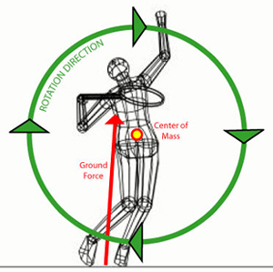
Video demonstration — the original video for this article was hosted on TennisPlayer.net. To maximize body rotation and angular momentum, players must direct the ground force behind the center of mass.
One way to enhance this force is through what we call a "counter movement." What that means in this case is the timing of the straightening or extension of the knees following the bend. [The knee bend is the counter movement to the straightening of the legs that follows.]
This is typically produced most easily with a platform stance. [The platform stance allows the extension muscles to generate more force because of the timing of the bend: a fast lengthening contraction of these muscles during the knee bend, is followed immediately by the shortening contraction during knee straightening.] It is significantly more difficult to achieve this benefit from use of a pinpoint stance because the knees typically flex much earlier (prior to the foot slide) and remain flexed for a longer duration.
Angular Momentum
So, as I said, the leg drive, the direction of the ground reaction force and the position of the body center of mass are factors that set up what happens next in the serve. Combined they have a critical effect on body rotation. Or more technically they have an effect on body angular momentum. This is because angular momentum is proportional to the speed of body rotation.
[To maximize forward angular momentum, the player has to maximize the leg drive and the creation of ground reaction force. But equally important, the player has to direct this ground reaction force as far as possible BEHIND the center of mass of the body.]
Most of this forward angular momentum is generated during the back swing. But some of it can be generated in the wind up through manipulation of the footwork and leg motion. For this reason, footwork is important during the wind up to establish preparation for later phases of the serve. We have found the pinpoint stances are the most effective in generating this. It is not uncommon for pinpoint servers to generate at least 20 %of their total forward angular momentum during the wind up.
By contrast, the narrow platform is least effective in producing forward angular momentum, with the wide platform in between. This comparison can be seen directly in the example player data in the "Compare Trials" page. Again enter the "Table Mode" and select "Angular Momentum Data" in the "Data Display Options" menu. As expected, narrowing the stance decreased the amount of forward angular momentum generated during the wind up from 15.3 % to 11.8 %of the maximum value. This is shown on the second line of the table.
It is important to note that each footwork option has relative advantages and disadvantages dictating that the approach used is based on specific needs of a given individual. The main footwork approaches and their relative success in accomplishing the covered mechanical goals are summarized in the table.
Stance Variations and Key Components
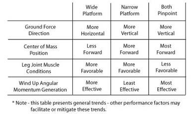
From this table you might conclude that the pinpoint stances are superior because they tend to produce favorable results in 3 categories. These are directing the ground force vertically, moving the center of mass forward, and generating angular momentum. By contrast the platform stances tend to be favorable in directing the ground force vertically (narrow), and in creating the leg joint and muscles conditions described above.
But we have to remember that this table represents what is happening only at the conclusion of the wind up, which is the first of the 4 Phases of the motion. It is simply descriptive of what is happening with certain factors at the end of the first stage of the serve. What a player gains in Phase 1 may or may not be outweighed by other factors operating in the later phases. We'll see how the relative advantages of both stances play out in greater detail when we progress to Phases 2 through 4.
Again there are no simple yes or no answers here. Depending on the player, the more favorable leg drive conditions of the platform stance may or may not outweigh the advantages of the pinpoint in positioning the center of mass, and creating angular momentum in the initial phase of the motion.
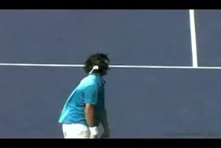
Video demonstration — the original video for this article was hosted on TennisPlayer.net.
The arm to trunk goal is a minimum angle of 80 degrees.
Key Body Positions
So now we get to the actual payoff of all our work understanding the wind up factors. Let's look at the key body positions and the angles at the end of the windup.
All of the body actions and motions we've been looking at lead to important body and segment positions. These positions are important because the success of the rest of the motion depends on them. The list provided is by no means exhaustive, but does contain those of greatest diagnostic power in my experience.
The key positions are expressed as angles. They can be accessed through the "Data Options" menu in the "Joint/Segment Angles" section. Values for measurements are shown in bar and table form and a graphic of the angle shown is drawn on the best view of the players stick figure in the graph legend section.
Upper Arm To Trunk
The upper arm to trunk angle is an indicator of the ease of future timing between the leg drive and upper body (particularly the hitting arm and racquet) motion. As I will discuss in the back swing article, very specific joint rotations are required in the back swing loop.
These rotations are most effective if the elbow is elevated to a certain level as they are initiated. The goal value of 80 degrees represents our experience of the minimum level of this elevation. Our junior player exhibits an angle less than 80 degrees indicating he must first elevate the elbow with shoulder abduction/flexion prior to entering the productive portion of the back swing loop. You may recall that that a low elbow position is often, but not necessarily, associated with an abbreviated back swing.
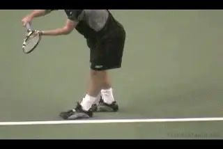
Video demonstration — the original video for this article was hosted on TennisPlayer.net.
Knee bend angles can range from 90 to 120 degrees.
Front Knee Angle
We use flexion of the knees as an indicator of overall leg joint preparation for the leg drive. Further, our experience has been it is easiest for students to focus attention on the front knee. Aside from the leg drive factors already discussed, the extent of flexion prior to extension determines leg drive effectiveness through range of motion manipulation.
The knee bend value is very dependent on individual strength but we have established a goal value of 110 degrees. This means the angle between the upper and lower leg is 110 degrees at the bottom of the knee bend.
Values between 90 and 120 are common. But more is not always better here, as excessive flexion can decrease leg drive due to muscle length and leverage disadvantages. It is important that the angle at the end of the wind up represent the maximum flexion. This can be verified by selecting "Leg and Trunk Data" in "Data Options" and observing the bar graph elements that track knee angles.
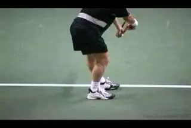
Video demonstration — the original video for this article was hosted on TennisPlayer.net.
The line of the hips to the baseline perpendicular: a minimum 10 degree value.
Line of Hips to Baseline
The angle of the hips to the baseline is important as an indicator of the range of motion available for hip rotation in later phases of the serve. Our data indicates 10 degrees to the non-hitting side of a line perpendicular to the baseline is a good amount. Top players can achieve substantially more. Less angle, or an angle skewed to the hitting side (ie, with the hips "open" to the net) point to potential range of motion deficiency.
One cause of reduced hip rotation is the use of the lateral pinpoint stance in which the rear foot moves to the right of the front foot. Another is early initiation of hip rotation generally as a result of premature leg drive. The latter can be verified by selecting "Leg and Trunk Data" in "Data Options" and observing either the line graph for hip rotation speed, or the bar graph elements that track the line of the hips angle.
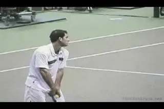
Video demonstration — the original video for this article was hosted on TennisPlayer.net.
Turning the shoulders 20 degrees past perpendicular to the baseline is a conservative value.
Line of Shoulders to Baseline
[This angle is also important as an indicator of range of available motion in rotation. A minimum goal value is 20 degrees to a line perpendicular to the baseline.] Values less than the conservative goal of 20 degrees to the non-hitting side of the baseline perpendicular are typically caused (and can be verified) by the same causes as the hip counterpart.
Particular attention should be placed on this angle relative to the hip angle. Having the shoulders rotated more than the hips is evident in all high level servers and, combined with timing of the rotation, implies muscular advantage to the muscles that rotate the upper trunk.
Backward Lean of the Trunk
[The backward lean of the trunk (seen primarily in a side view) is another attribute observed in nearly all high level servers.] By leaning the trunk back up to 30 degrees, [more rotational range is available for future forward trunk rotation.] Also, evidence suggests this position forces the back knee into flexion, causing extension to occur under more favorable (slower) muscle contractile conditions. Extreme backward leans should be avoided as it becomes counter productive to the goal of positioning the center of mass forward.
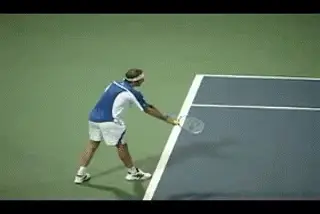
The backward trunk lean value can be as much as 30 degrees.
Lateral Lean of the Trunk
Lateral lean of the trunk (seen in a back view) is a natural consequence of knee flexion. In later phases of the serve its role is important to twisting rotation of the trunk. [Pro players can have extreme lateral lean corresponding largely to the depth of the knee bend.] As will be discussed in future articles, lateral pinpoint stances tend to cause even more extreme leans in the lateral direction.
[However, at the end of the wind up, for most players this angle should be kept to a minimum, as extensive lean will interfere with generation of forward angular momentum.] For juniors we recommend a lateral lean of no more than 80 degrees. Some junior players, including our example player, can tend to greatly exceed the 80 degree goal angle so coaches should be aware of this position.
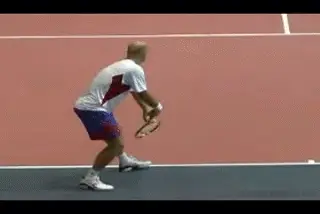
The lateral lean is the angle of the trunk to the court from the rear view.
Conclusion
That concludes my description of the serve wind up. You may have noticed that I described different wind ups, and noted some potential difficulties involved in the abbreviated motions. When it came to our junior player, I included some of the decisions we had made based on our coaching experience, as guided by the data.
But I did not explicitly state the relative superiority of any technique. The reason is that such statements are impossible to make in the general sense, and I would not presume to be able to make them. With few exceptions, any of the positions and techniques I described represent viable options to wind up execution. The question really is how well the player has developed conditions for future success at the completion of the windup, and how his body is positioned by key body angles.
The good news for those that don't have access to 3D technology is that most of the wind up options are observable on court with video technology and the knowledge of what to look for. Observation and analysis becomes increasingly complicated, however, with regard to the back swing and upward swing even with 3D technology. But that is where we are boldly heading in the coming months.
References:
The research referenced regarding foot position and ground force was headed by Dr. Bruce Elliott. Elliott, B.C. and G.A. Wood, The biomechanics of the foot-up and foot-back tennis service techniques, Australian Journal of Sports Science 3(2): 3-6.
The research cited comparing attributes of abbreviated versus full back swings was also headed by Dr. Bruce Elliott. Elliott, B., G. Fleisig, R. Nichols, and R. Escamilla. 2003. Technique effects on upper limb loading in the tennis serve. Journal of Science and Medicine in Sport 6(1): 76-87.

Dr. Brian Gordon has changed the understanding of the
Biomechanically Engineered Stroke Technique (BEST) is the
only empirically based stroke mechanics system in the world,
growing from three decades of both academic and applied on
court research. He is a founder of the Tennis Center for
Performance Research in Miami, Florida, which is creating a
new paradigm for player development. The center has assembled
an unprecedented group of specialists with cutting edge
knowledge across the entire range of tennis performance.
To visit his website, [**[Click
Here!]**](https://tennisperformanceresearch.com/)
Top contact him directly, [**[Click
Here!]**](mailto:gamabrian@icloud.com)
← 3D Technologies Intro | Biomechanics Index | Contact at 10,000 FPS →